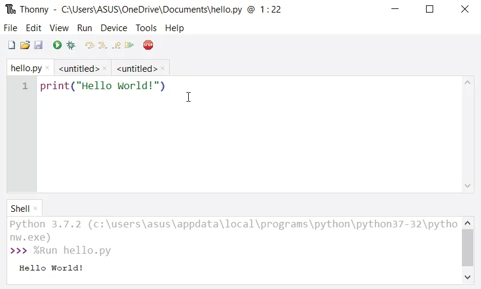

Python - бұл көпплатформалық программалау тілі, бұл оны Windows, macOS, Linux платформаларында іске қосуға болады, жаттамасы Java мен .NET виртуалды машиналарға айналдырылған. Ол тегін және ашық кодты.
Бұл кезде көбінесе бүгінгі Linux мен Mac-терде Python өмірде болады, бірақ негізгісі ескі болуы мүмкін. Сондықтан, өзгеріске ұшырау орнатуынан бастапты ерекше жатамды орнату - үздік нұсқасын орнату үшін әрдайым ыңғайлы.
Python орнатуын қауіпті жол - Thonny IDE пайдалану. Thonny IDE Python-ның соңғы нұсқасымен жаталған келгенді орнатылған. Сондықтан, Python-ды отдырмай, арнайы болары арқылы Thonny IDE пайдалануға болады.
Python программасын компьютеріңізде іске қосу үшін алдағы қадамдарды көруді таңдаңыз.
.py кетпейтін
шекараумен сақтау. Мысалы, hello.py, example.py, ж.б. Файлға көмекті аты бере
аласыз. Бірақ файлдың атауы .py бетінде аяқталуы тиіс.
Егер сіз Thonny пайдаланбайтын болсаңыз, Python-ды компьютеріңізге орнату жөнінде алдағы нұсқаны көріңіз.
Орнатушы файлды іске қосып, Python-ды орнату үшін көлемді қадамдарды орындаңыз. Орнату процесінде Add Python to environment variables жатпайды. Бұл Python-ды қоса алар жатпайдымен жатамен орнатар, және сіз компьютердің өзгерістерінің кезінде Python-ды іске қоса аларсыз.
Сондай-ақ, Python-ды орнату орнын таңдауға болады.
Орнату процесін аяқтадыңыздан кейін, сіз Python кодты іске қоса аласыз.
Python орнатылды дайында, команда жолында python терігін енгізу интерпретаторды дайында режимде
іске қосады. Біз дайында Python кодты енгізе аламыз, оны басу үшін Enter түймесін басамыз.
1 + 1 терігін енгізіп, Enter түймесін басып көріңіз. Бізге шығарым көрсетілгенде, бізге
2 шаруашысы бар. Бұл команданы көмекші көмекші ретінде қолдануға болады. Бұл режимнен шығу үшін
quit() терігін енгізіп, Enter түймесін басыңыз.
Біз Python сценарий файлын жазу үшін кез келген мәтін редакциялау программасын пайдалана аламыз.
Оны .py кетпейтінімен сақтау қажет. Бірақ IDE пайдалану өмірімізді жасау жаттығушы болары алатын
арқауымызға болады. IDE - бұл программалаушы үшін кодты көмекші аспаптарды, синтаксис белгілеу мен тексеру, файл
жасаушылар, ж.б. қамтамасыздау құрау.
Мағанай Python орнатқанда, IDLE атаулы IDE де орнатылады. Сіз оны пайдалана аласыз, кез келген мәселе бойынша алғашқысы үшін жаңа тапсырмалар жасау үшін оны пайдалануға болады.
IDLE ашылғанда, интерактивті Python Shell ашылады.
Енді жаңа файл жасау және оны .py кетпейтінімен сақтауға болады. Мысалы, hello.py
Файлда Python кодты жазып, оны сақтаңыз. Файлды іске қосу үшін Run > Run Module бағдарламасына өтіп, немесе F5 түймесін басыңыз.
Енді Python орнатылды, біздің алғашқы Python программамызды жаза аламыз.
Бірінші сөздіңізді тыңдау үшін жаттығушы “Сәлем, Әлем!” етіп байланыстыруды бөлмек келе жатамыз.
“Сәлем, Әлем!” - бұл экранға Сәлем, Әлем! шығаратын жаттығушы бағдарлама. Бұл өте
жаттығушы бағдарлама болды, оны бастаушыларға жаңа программалау тілін таныстыру үшін көптеген рет қолданылатын
себептермен пайдаланылады.
Көбіректі мәтін редакторында немесе IDE-де келесі кодты теріңіз және оны hello_world.py деп
сақтау.
print("Сәлем, Әлем!")
Содан кейін, файлды іске қосып байлаңыз. Сізге келесі шығарым көрінеді.
Сәлем, Әлем!
Марапаттамызды қалаймыз! Сіз тек Python-дағы алғашқы программаны жаздыңыз.
Бұл көрінетіндігіңізден көрі аласыз, бұл өте оңай тапсырма болды. Бұл Python программалау тілінің көмекшілігі.